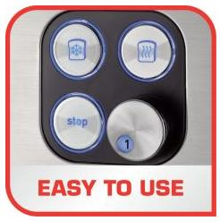
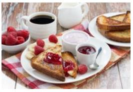
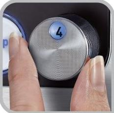
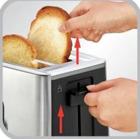

Scurta descriere
Panou frontal, usor de utilizat
Pentru acces usor la toate functiile: niveluri de rumenire, dezghetare, reincalzire, oprire 2 fante cu dimensiuni diferite si 7 niveluri de rumenire pentru a savura paine prajita asa cum iti place : Functii de decongelare, reincalzire si oprire cu indicatoare luminoase.
Combinatia optima dintre eleganta si performanta

Descopera Equinox, noul prajitor de paine de la Tefal.
Un prajitor de paine intuitiv, pentru a va asigura cea mai buna paine prajita in fiecare dimineata: panoul frontal cu indicatoare luminoase iti permite sa
accesezi cu usurinta toate setarile. Termostat ajustabil cu 7 nivele de control al gradului de rumenire 3 functii: un buton pentru a opri ciclul de prajire
in orice moment, un buton pentru dezghetare pentru a praji paine congelata, un buton pentru a reincalzi painea prajita anterior. Dispune, de asemenea, de un
sistem pentru ridicarea completa a manerului pentru a putea scoate cu usurinta chiar si cele mai mici felii de paine prajita, si o tava de firimituri
detasabila pentru a pastra intotdeauna prajitorul de paine curat. Datorita designulului robust si elegant, din otel inoxidabil, Equinox intregeste aspectul
oricarei bucatarii.
Niveluri de control

Control variabil cu 7 niveluri pentru rumenire.
Ridicare completa a manerului

Pentru a scoate cu usurinta feliile de paine.
Finisaj din otel inoxidabil

Design elegant si materiale de inalta calitate.